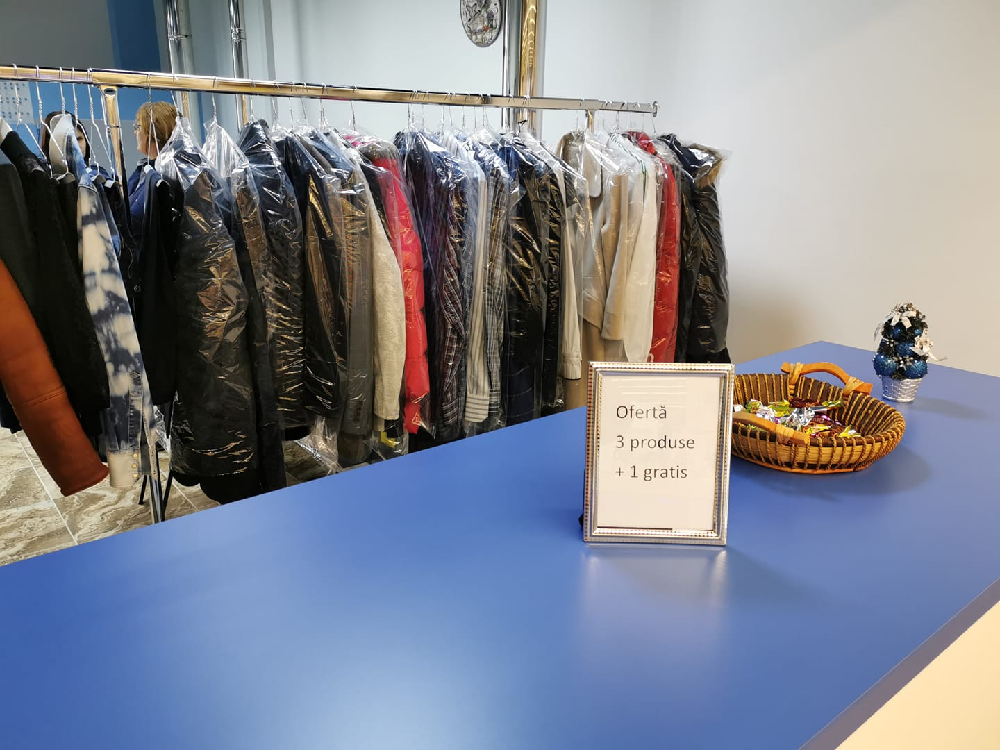
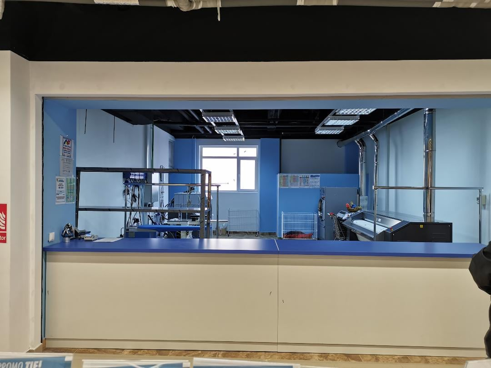
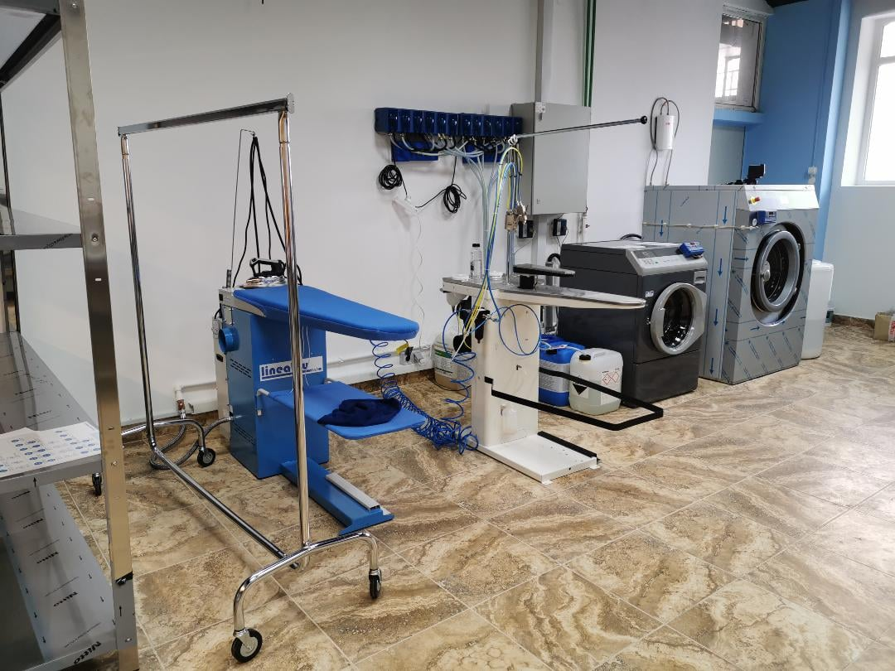
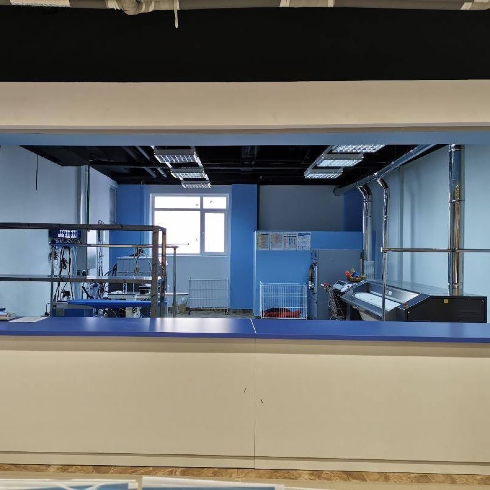
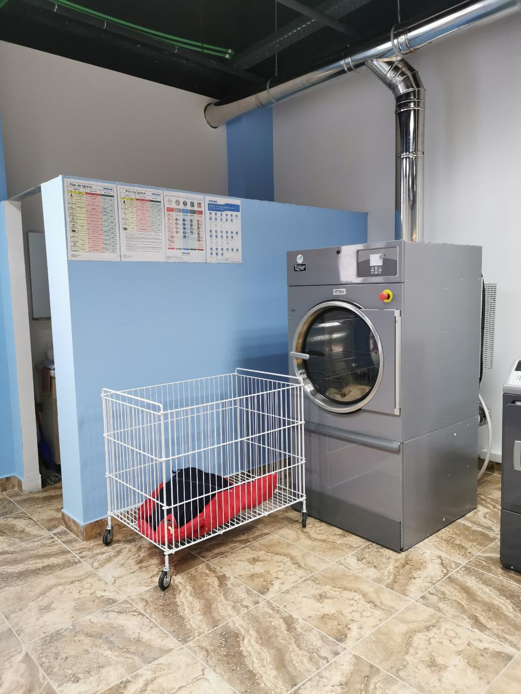
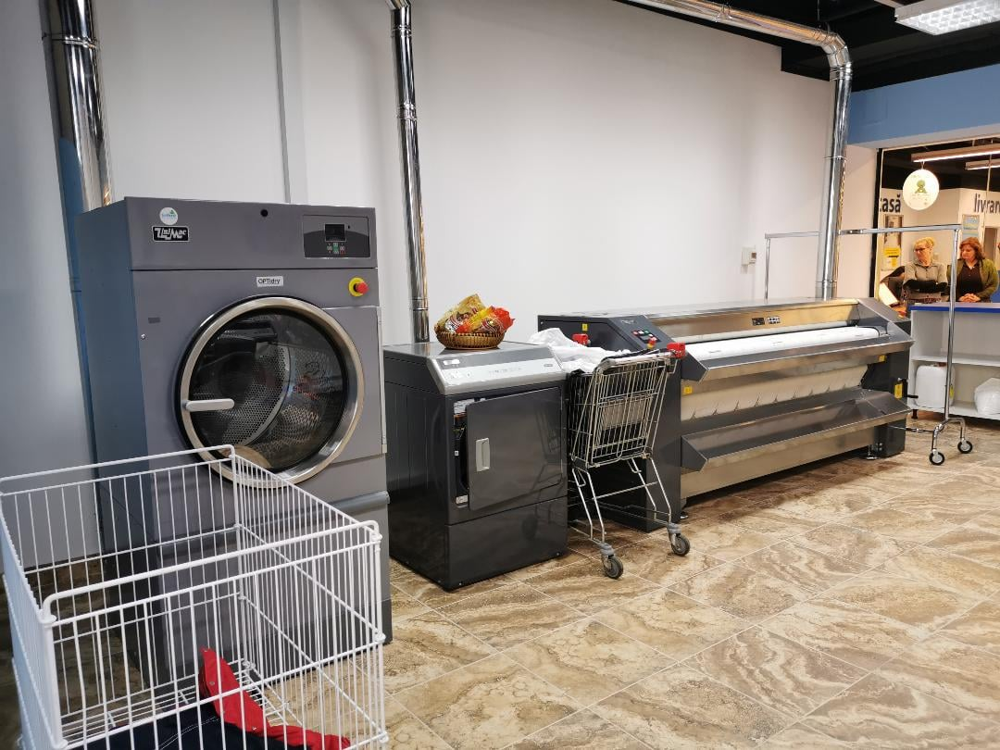
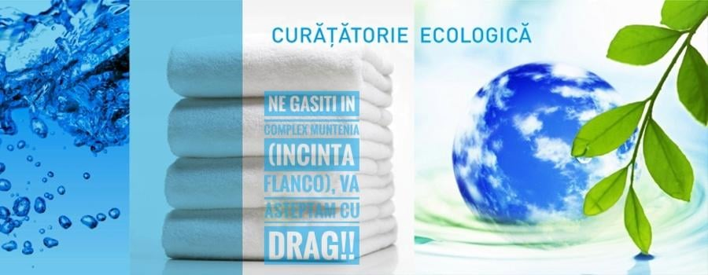
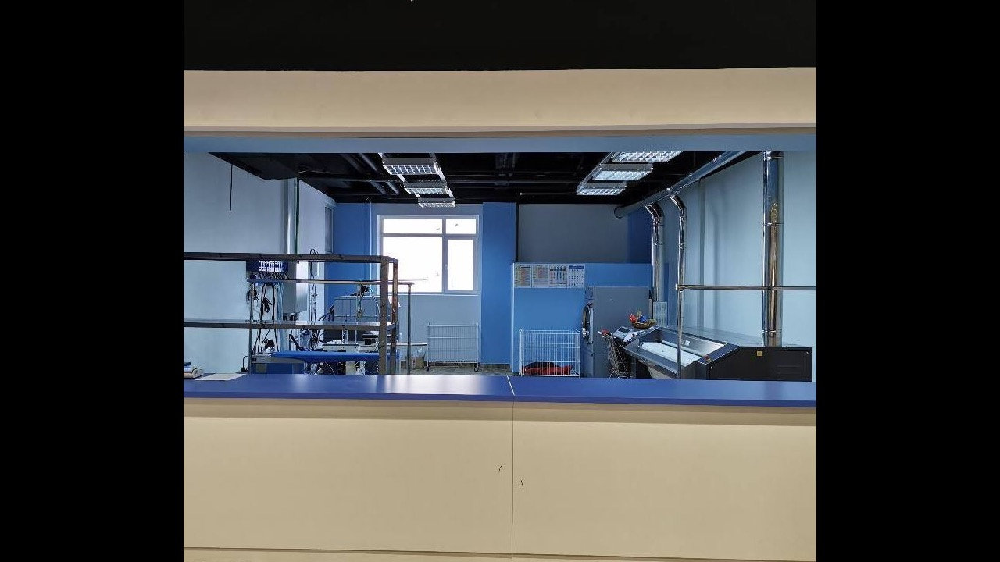
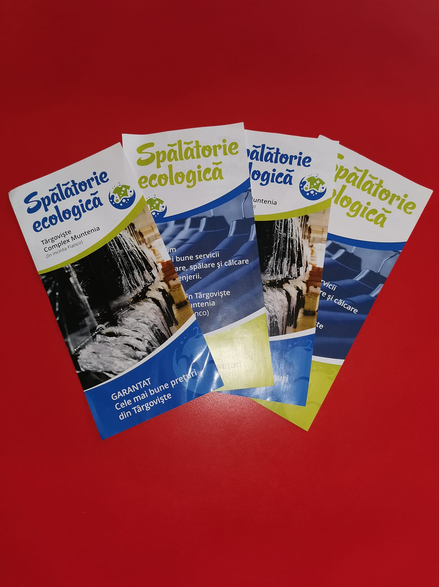
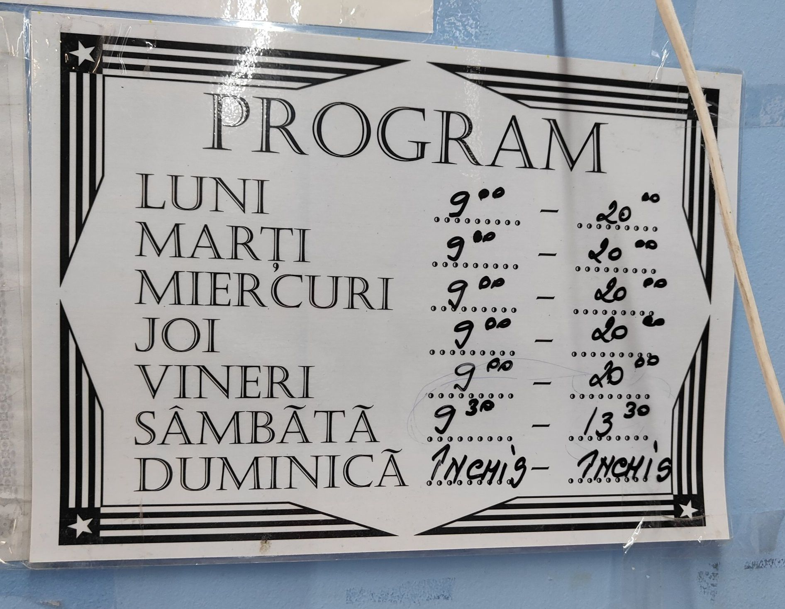

Haine curate, fără chimicale agresive.
Spălătorie și curățătorie ecologică modernă în Târgoviște, chiar în Complex Muntenia (incinta Flanco). Spălăm, curățăm și călcăm hainele, textilele și lenjeria ta — cu grijă pentru țesătură, pentru piele și pentru mediu.

O curățătorie modernă, în inima orașului.
Spălătoria Ecologică s-a deschis în Complex Muntenia, în incinta Flanco, ca o spălătorie și curățătorie ecologică modernă, complet dotată — de la mașini profesionale de spălat și uscat, la masă de călcat cu abur și calandru pentru lenjerie.
Lucrăm ecologic: curățăm textilele în utilaje care folosesc apă și detergenți biodegradabili și nu folosim percloretilenă sau alte substanțe chimice agresive. Așa, hainele ies curate în profunzime, fără miros de solvent și fără să sufere țesătura.
Ne găsești ușor, la doi pași de casă, cu program lung în timpul săptămânii. Adu-ne hainele obosite — pleacă curate, călcate și gata de purtat.

Curat, blând și modern
Trei motive pentru care merită să-ți lași hainele pe mâinile noastre.
100% ecologic
Detergenți biodegradabili și curățare cu apă, fără percloretilenă. Blând cu pielea și cu mediul, fără miros de solvent.
Utilaje profesionale
Mașini moderne de spălat și uscat, masă de călcat cu abur și calandru pentru lenjerie — rezultate uniforme, la fiecare comandă.
În Complex Muntenia
Chiar în incinta Flanco, la parterul complexului — lași hainele când vii la cumpărături și le ridici curate.
Ce facem cu hainele tale
De la spălare la călcat, ne ocupăm de tot — pentru textile de zi cu zi și pentru cele delicate.
Spălare haine
Spălare profesională în utilaje moderne, cu detergenți biodegradabili, pentru rufe curate și proaspete.
Curățare ecologică
Curățare în profunzime a textilelor, fără percloretilenă — pentru haine care rămân curate și fără miros de solvent.
Călcat profesional
Călcat cu abur la masă profesională — hainele pleacă netede, aranjate și gata de purtat.
Lenjerie & textile
Spălare și călcat pentru lenjerie de pat, fețe de masă și textile mari, la calandru — netede și igienizate.
Textile delicate
Curățare atentă pentru haine sensibile — costume, paltoane, geci și materiale care cer o mână blândă.
Ofertă 3 + 1 gratis
La fiecare 3 produse aduse, al patrulea îl curățăm gratuit. Întreabă-ne de detalii la ghișeu.
Pentru gama exactă de articole, termene și prețuri, treci pe la noi la ghișeu, în Complex Muntenia.

Curățare cu apă, nu cu solvenți chimici.
Curățarea ecologică a textilelor înseamnă spălarea țesăturilor în utilaje care folosesc apă și detergenți biodegradabili. Apa pătrunde în profunzime și curăță țesătura din interior, fără să folosim substanțe chimice dure.
Spre deosebire de curățătoria chimică clasică, noi nu deținem mașini cu percloretilenă. Rezultatul: haine curate, fără miros de solvent, blânde cu pielea — inclusiv pentru persoanele alergice — și mai prietenoase cu mediul.
Iar pentru că spălăm și limpezim corect, țesătura rămâne curată mai mult timp după fiecare purtare.
Aduci 3 produse, al patrulea e din partea noastră.
O ocazie bună să-ți aduci toată garderoba la curățat. Vino în Complex Muntenia și întreabă-ne de ofertă la ghișeu — te așteptăm cu drag.
O privire în spălătoria noastră
Spațiul, utilajele și munca noastră de zi cu zi în Complex Muntenia.

Ghișeul nostru
Uscător profesional
Calandru pentru lenjerie
Vă așteptăm cu drag
Spațiul de lucru
Serviciile noastre
Programul nostru